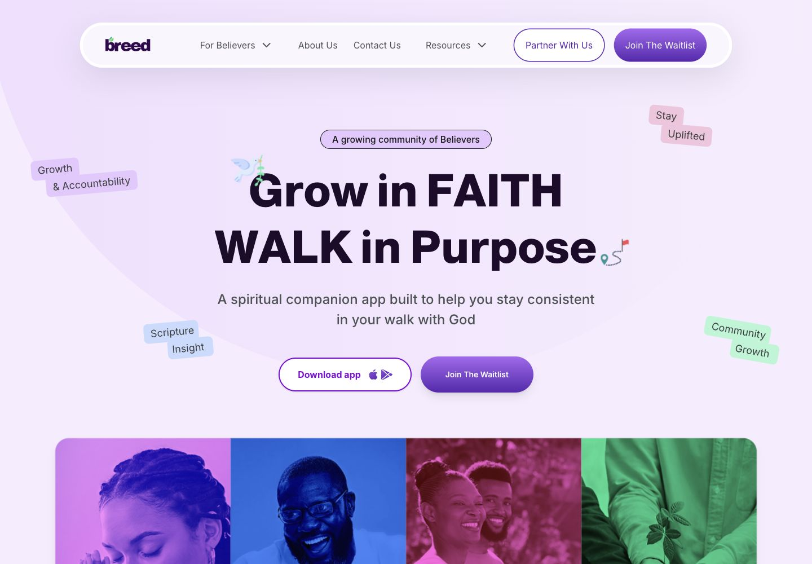
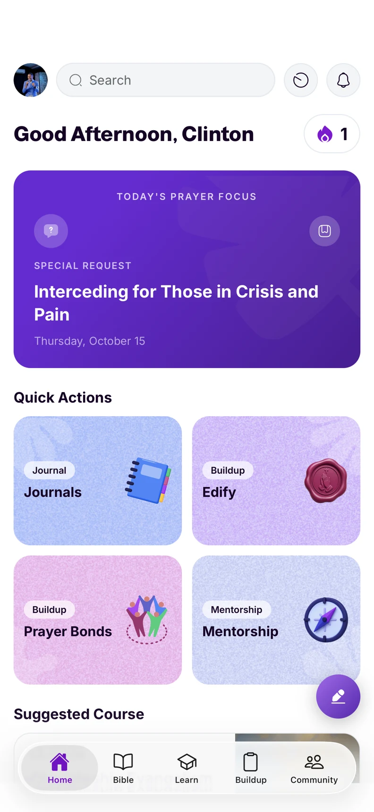
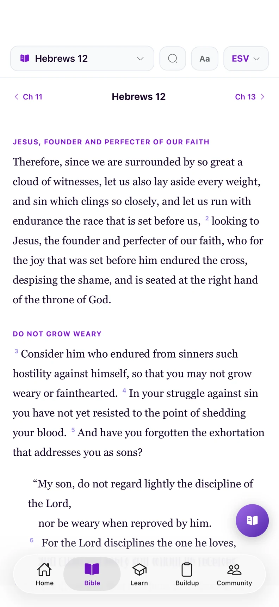
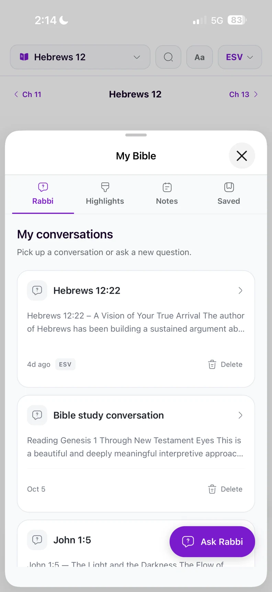
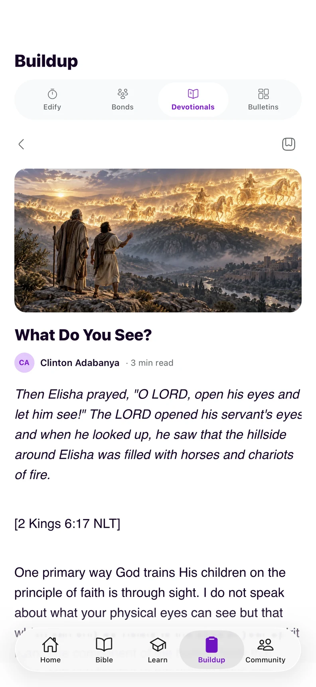
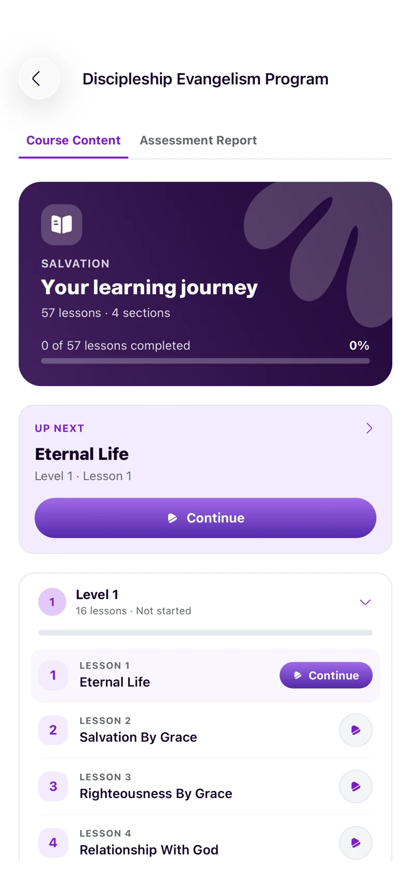
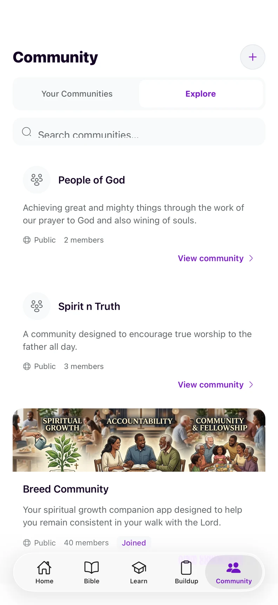

Make consistency feel achievable.
A clear home screen brings the day’s prayer focus, reading, and useful shortcuts within reach, helping believers find a starting point.

Octave labs

Spiritual growth is built through everyday habits and meaningful relationships. Breed brings those experiences together: a place to read, reflect, learn, and find encouragement, alongside tools that help preachers organise their teaching and support their communities.
One platform serves two connected audiences. Believers need an approachable daily companion; preachers need a practical workspace for teaching and discipleship.
A clear home screen brings the day’s prayer focus, reading, and useful shortcuts within reach, helping believers find a starting point.
Bible study, devotionals, courses, and reflection belong in a connected experience that people can return to throughout their faith journey.
Preachers need a dedicated space to organise courses and devotional series, with access to mentorship, community, and meeting tools.
Two purposeful workspaces, connected through one account. Believers can move between Scripture, learning, and daily encouragement. Preachers can switch into a dedicated dashboard to manage teaching content and ministry activity, while a welcoming public website introduces both experiences. The mobile app puts prayer, Bible study, devotionals, courses, and community into a familiar daily companion.
A personal starting point for daily faith, with Bible study and learning a few clicks away.
The mobile app carries Breed’s experience into everyday moments. Five clear destinations — Home, Bible, Learn, Buildup, and Community — connect personal practice with learning and belonging.

Prayer focus and useful shortcuts bring everyday faith practices into one home screen.

Clear chapter navigation and a focused reading layout keep Scripture at the centre.

My Bible brings Rabbi conversations, highlights, notes, and saved passages within reach.

Devotionals combine expressive imagery with comfortable, long-form reading.

Structured lessons, progress, and a next step make each course easy to return to.

Believers can discover groups and connect around shared faith and purpose.
A dedicated workspace for organising teaching and seeing ministry activity at a glance.
A warm, expressive introduction to Breed, its story, and the people it serves.
A connected web and mobile experience that brings daily practice, structured learning, and teaching tools under one identity.
The believer home brings prayer focus, consistency tracking, and shortcuts into one view, with direct routes to Scripture and learning.
Preachers can see their course activity and manage courses and devotional series from a dedicated dashboard.
Account switching connects personal faith practice with the tools for guiding others, supported by a consistent public presence.